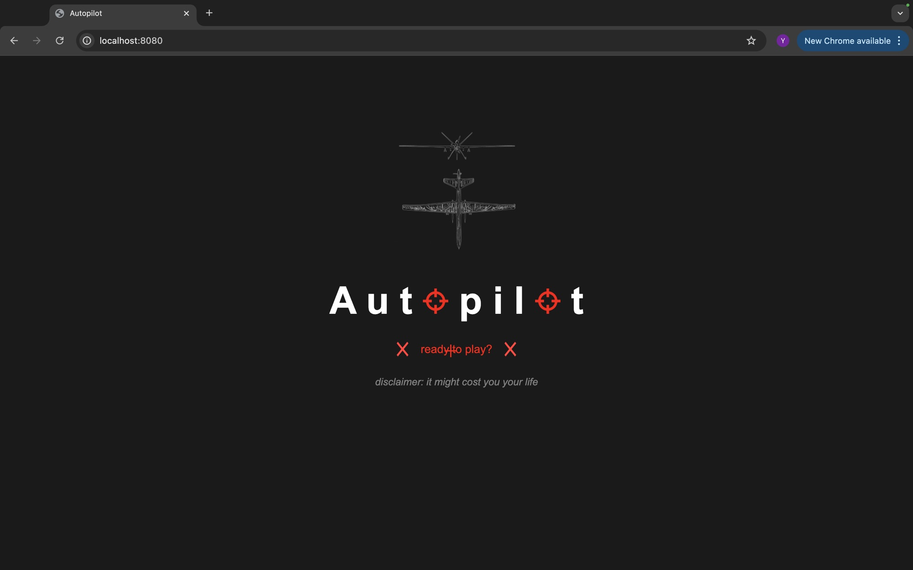

Autopilot

The player takes the role of a drone operator. Eye-tracking software, retrained from WebGazer.js, places a targeting crosshair on a "mission-video" — 4K footage of Israel, digitally degraded into low resolution and glitch — at the point the player's gaze lands; a mouse click fires. Two saw-wave synthesizers in SuperCollider tie pitch and amplitude to eye movement, producing a continuous motor-like drone under a missile-launch sound on each click. Strikes are never shown directly: each produces a sustained light flicker that outlasts its explosion sound and bleeds into the following footage.
After roughly ten minutes the game ends onto an information page: high-resolution photographs from Gaza, drone-market data, and casualty figures from U.S. drone strikes in the Middle East.
video documentation